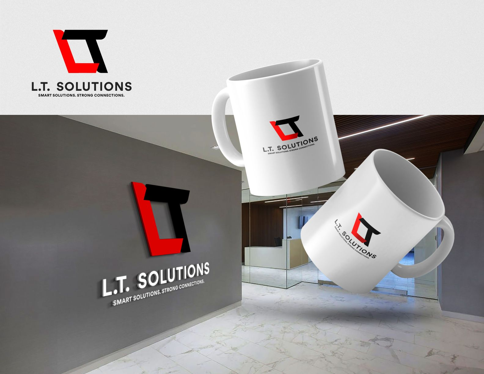

Problem 01
L.T. Solutions needed a clear, credible visual identity that could communicate both technical expertise and human-centered service. The brand had to position itself as a trusted technology partner, not just a service provider, while appealing to both startups and enterprise clients.
Strategy 02
Taking the problem and solution into account, I developed a brand system built around the core pillars of Logic and Trust, translating these values into a simple, memorable visual language. The strategy focused on creating a mark that symbolized integration, reliability, and forward-thinking technology.
Design System 03
A minimal, high-contrast color palette and a geometric sans-serif typeface were created to reinforce clarity and technical precision. The logo construction rules, iconography styles, and typographic hierarchy created a cohesive system that ensures consistent brand expression across platforms.
Solution 04
I designed a unified logo concept where the interlocking L and T represent the connection between logic and trust (and the name of the brand), as well as the fusion of technology and human experience. The system balances bold innovation with technical stability through a high-contrast color palette and clean typography.
Execution 05
The core identity was produced to include primary and knockout logo variations, iconography, typography selection, and branded merchandise applications. The system was designed to remain legible, scalable, and consistent across digital, print, and physical touchpoints.
Outcome 06
The final deliverable was a modern, professional identity that communicates reliability, innovation, and strategic partnership. The final system provides L.T. Solutions with a scalable foundation for marketing, digital products, and client-facing materials as the company grows.
Colour
Typography
Aa
A B C D E F G H I J K L M N O P Q R S T U V W X Y Z
Symbol
Two letters, one connection.
The mark interlocks an L and a T: the brand's name, and its two pillars, Logic and Trust. The forward slant signals momentum; the hard cut corners keep it technical and exact.
Applications
